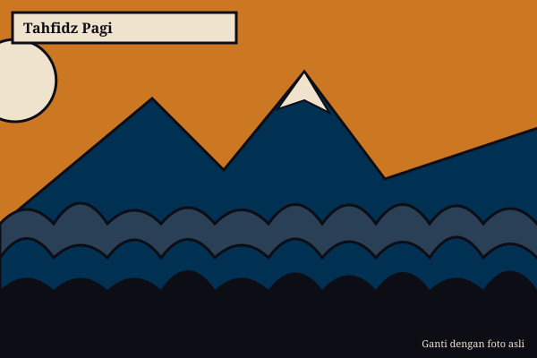
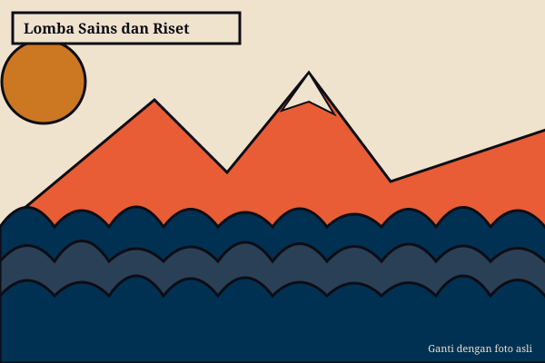
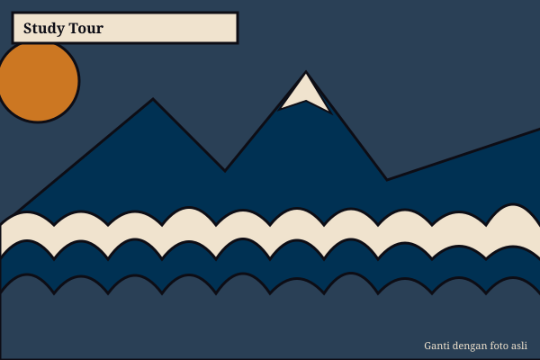
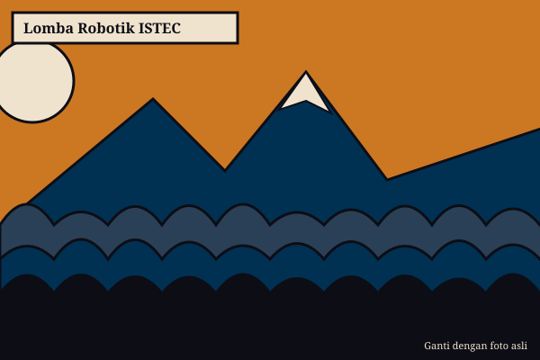
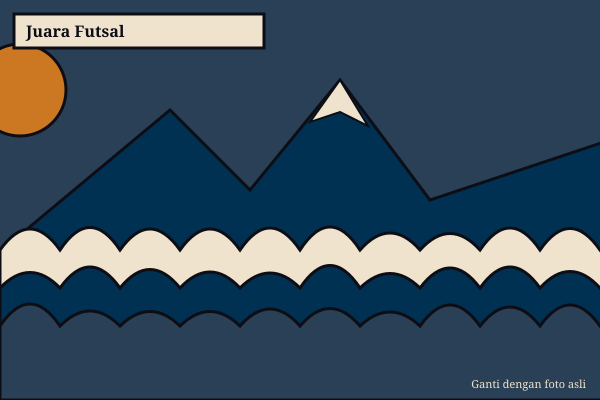
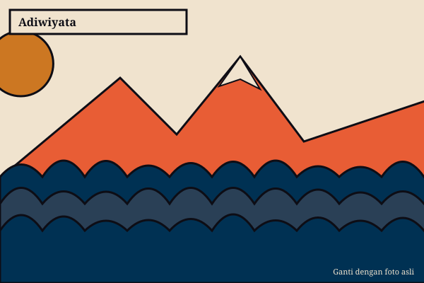

PK Tahfidz
Hafalan Al-Qur'an dibimbing setiap pagi, dengan target yang disesuaikan kemampuan siswa.
Terakreditasi A sejak 1995
Selamat datang di MTs Negeri 2 Sukoharjo. Kenali program, prestasi, dan kegiatan belajar kami, lalu daftarkan putra-putri Anda.
MTs Negeri 2 Sukoharjo berdiri sejak 25 November 1995 di bawah Kementerian Agama (SK 515A Tahun 1995). Madrasah beralamat di Jl. KH. Agus Salim No. 48, Sukoharjo, Jawa Tengah.
Visi: Terwujudnya madrasah yang unggul, religius, mandiri, inovatif, berprestasi, berbudaya riset, dan berwawasan lingkungan.

Hafalan Al-Qur'an dibimbing setiap pagi, dengan target yang disesuaikan kemampuan siswa.

Siswa belajar meneliti, merakit robot, dan mengikuti olimpiade sains.

Penguatan bahasa asing dan wawasan global untuk siswa yang ingin melangkah lebih jauh.
Kelas reguler (Tahfidz, Umum, KKO)AsramaRobotikaBahasa asingEkstrakurikuler



Lingkungan AdiwiyataSyarat, biaya, dan jadwal tahun ajaran berjalan tersedia di portal PPDB resmi.
Buka portal PPDBJl. KH. Agus Salim No. 48, Sukoharjo, Jawa Tengah
Telepon: (0271) 5911154
Email: mtsnskh@gmail.com